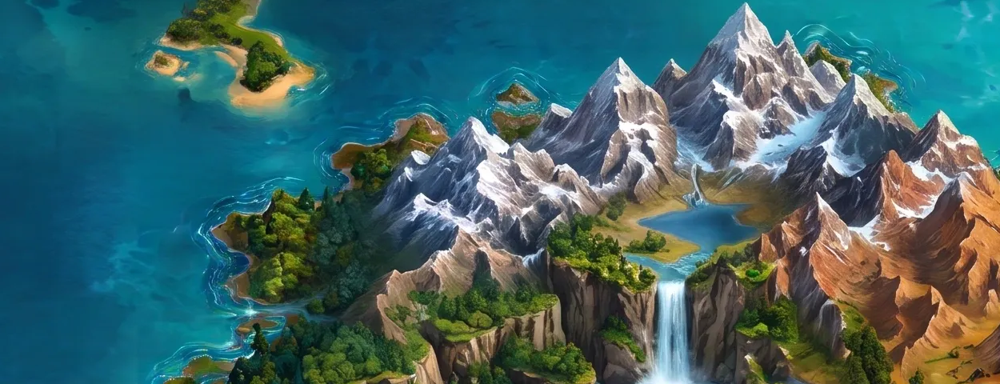
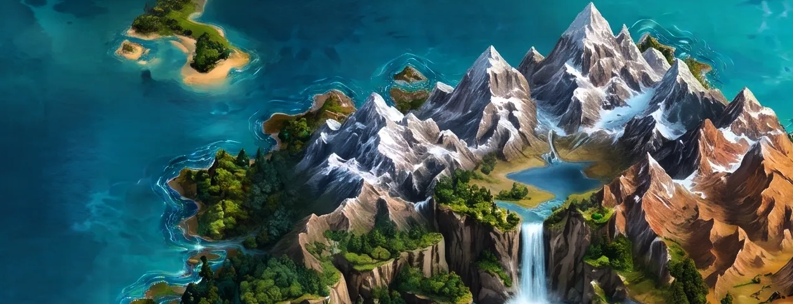
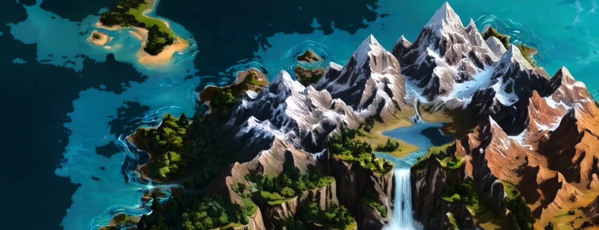

Fork montagne — varianti "linee scure più scure" (crop massiccio)
V0 — base (dipinto, nessuna grade)

A — curva sulle ombre (solo i darks si approfondiscono)

B — line mask (solo i tratti scuri sottili)

C — clarity/unsharp su L (micro-contrasto globale)
A+B — ibrida